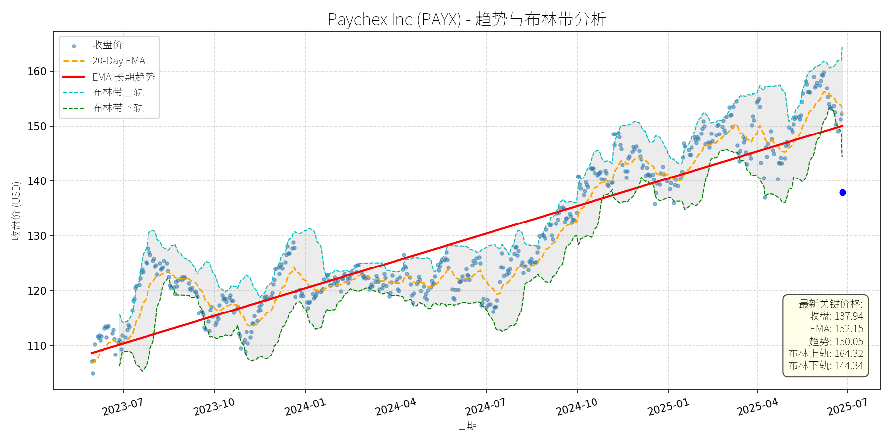

美国 (S&P 500)异动分析报告
报告生成日期: 2025-06-26
W.W. Grainger, Inc. (GWW)
R²: 0.777
斜率: 0.57
布林带穿透: 0.13%
分析师模型总结
调用模型生成总结时发生错误。
Paychex Inc (PAYX)
R²: 0.856
斜率: 0.05
布林带穿透: 4.64%

分析师模型总结
### 1. 核心业务与基本面评估
Paychex Inc (PAYX)是人力资源管理（HCM）解决方案龙头，专注为中小企业提供 payroll、PEO（专业雇主组织）、保险及AI驱动的HR技术服务。通过2025年1月收购Paycor（$41亿），公司强化了高端企业（100人以上）的服务能力，形成“Paychex Flex（中小企业）+ Paycor（高端企业）+ SurePayroll（微型企业）”的全细分市场覆盖，协同效应显著。
**财务健康状况**：
- 营收与利润增长稳定：2025财年（截至2025年5月）总营收52.8亿美元（+6% YoY），调整后净利润16.9亿美元（+6% YoY）；Q4营收增速提升至10%（主要来自Paycor收购）。
- 盈利能力改善：调整后营业利润率全年扩大250个基点（不包括Paycor），Q4进一步扩大110个基点，显示运营效率提升。
- 财务韧性：截至2024年11月，公司持有13亿美元现金及投资，半年运营现金流8.4亿美元，足以覆盖收购及债务（债务权益比1.73，虽略高但处于可控范围）。
**估值水平**：
- 当前PE（29.41x）、PS（10.26x）均高于行业平均（例如，同属HCM领域的ADP当前PE约25x），但结合2026财年指引（营收增长16.5%-18.5%、EPS增长8.5%-10.5%），PEG ratio约2.9-3.4，处于合理区间（考虑收购协同带来的长期增长潜力）。
**总结**：公司财务稳健，盈利能力持续提升，估值虽略高但与增长预期匹配，基本面支撑长期价值。
### 2. 技术面与消息面分析
**技术面信号**：
- 长期趋势：图表中红色“EMA长期趋势线”呈明确上升态势（2023年7月至今，从110美元升至150美元以上），显示长期多头格局未变。
- 当前偏离：截至2025年6月26日，股价137.94美元显著低于长期趋势线（约145美元），短期处于回调区间。
**回调原因分析**：
- 消息面无重大利空：2025年6月25日发布的Q4财报超预期（营收增长10%、成本协同目标提升至9000万美元、2026指引强劲），但股价当日下跌9.4%，主要源于**短期情绪调整**：
1. 前期涨幅消化：2025年以来股价累计上涨约10%（截至Q4财报前），市场对高估值（当时股价接近150美元，高于此前consensus目标）的担忧引发获利回吐；
2. 宏观因素扰动：市场对美联储延迟降息的预期升温（劳动力市场韧性推高通胀担忧），导致成长股短期承压。
**结论**：此次回调为**无明确利空的技术性调整**，基本面未发生恶化。
### 3. 综合前景展望与量化判断
**核心投资逻辑**：
Paychex是基本面优秀的成长型公司，短期因市场情绪及技术性因素回调，但长期受益于：
- 收购协同效应：Paycor的高端客户资源与Paychex的中小企业基础形成互补，2026财年预计贡献12%-13%的营收增长，成本协同超预期（9000万美元）；
- 市场细分深化：全品牌矩阵（Flex/Paycor/SurePayroll）覆盖所有企业规模，提升客户渗透及交叉销售能力；
- 长期趋势支撑：HCM行业受中小企业数字化转型驱动，市场规模持续扩张（预计2027年全球HCM市场规模达3000亿美元，CAGR 8%）。
---
**短期展望（未来1-4周）**：
- **走势预测**：技术性反弹概率高（基本面支撑+短期超卖）。
- **短期目标价**：145.00美元（对应上涨5.1%，回到长期趋势线附近）。
- **理由**：
1. 财报超预期但股价下跌，市场情绪过度反应，短期将修复；
2. 技术面：股价偏离长期趋势线约5%，存在回归需求；
3. 宏观因素：美联储6月会议维持利率不变，市场对降息的预期将逐步稳定，成长股压力缓解。
---
**长期展望（未来3-6个月）**：
- **判断**：**看好**，有望重回长期上升趋势。
- **长期目标价**：160.00美元（对应上涨16.0%）。
- **理由**：
1. 基本面驱动：2026财年营收（+16.5%-18.5%）及EPS（+8.5%-10.5%）增长指引强劲，收购协同效应将逐步释放；
2. 估值修复：当前PE（29.41x）低于2024年平均（32x），随着业绩增长，估值将向历史均值回归；
3. 技术面：长期趋势线持续上升，回调后将形成“上升趋势中的整理”，为后续上涨蓄力。
---
**风险提示**：
- 宏观经济下行导致中小企业 hiring 需求放缓；
- Paycor整合进度不及预期；
- 美联储持续加息导致成长股估值压缩。
**结论**：短期反弹可期，长期具备持续增长潜力，建议逢低布局。
Waste Management, Inc. (WM)
R²: 0.879
斜率: 0.11
布林带穿透: 0.39%
分析师模型总结
### 1. 核心业务与基本面评估
**业务概述**：Waste Management (WM) 是北美最大的综合废物管理公司，核心业务包括 residential/commercial/industrial 垃圾收集、填埋场运营、回收服务，以及通过2024年底收购Stericycle拓展的医疗废物管理（WM Healthcare Solutions）。其业务具备强“ recession-resistant ”属性（垃圾处理需求稳定），且通过填埋场的 regulatory moat（严格环保法规限制新进入者）形成竞争壁垒。
**财务健康与盈利能力**：
- **增长性**：2024年营收增长8%，2025年受益于Stericycle收购，管理层预计营收增速将翻倍至16%（中值），自由现金流（FCF）亦将增长18%（关键股息支付来源）。
- **盈利能力**：尽管Stericycle的低利润率（12.3%）拉低了整体EBITDA margin（2025年一季度降至27.7%），但管理层预期协同效应释放后，margin将回升至30%左右（ legacy 业务历史水平），显示盈利能力具备修复空间。
- **财务结构**：负债权益比（4.40）较高，主要因收购Stericycle的债务融资（72亿美元），但管理层已暂停股票回购，优先用现金偿还债务，财务风险可控。
**估值水平**：
- 当前PE（33.42x）、PS（4.25x）虽高于市场平均，但结合其“ recession-resistant ”属性及增长预期，估值合理。参考管理层指引，2025年企业价值（EV）对应EBITDA约15.5倍，低于同行业竞争对手（部分竞品估值更高但 volumes 萎缩），显示估值具备吸引力。
### 2. 技术面与消息面分析
**技术面信号**：
- **长期趋势**：图表中“ EMA 长期趋势线”（红线）呈明显上升斜率，2023年7月至2025年6月，股价从约160美元上涨至228美元，复合年增长率约18%，长期上升趋势未变。
- **短期回调**：近期股价从2025年5月高位（约240美元）回落，当前收盘（228.58美元）略低于布林带下轨（229.47美元），同时低于20-Day EMA（234.20美元）和长期趋势线（238.24美元），显示短期处于超卖区间。
**回调原因分析**：
- **消息面**：近期无重大利空（2025年以来新闻均为正面，如盖茨基金会持有17%股权、收购Stericycle带来增长、被评为“ recession-resistant 标的”），因此回调并非由基本面恶化驱动。
- **技术性调整**：股价从2025年初的200美元上涨至5月的240美元（涨幅20%），短期获利了结压力导致回落，属于趋势中的正常回调。
### 3. 综合前景展望与量化判断
**核心投资逻辑**：
WM是“ 基本面优秀+技术面长期上升+短期无利空 ”的典型标的。其“ recession-resistant ”业务模式、收购Stericycle带来的增长动能、稳定的FCF及股息增长（22年连续增加），支撑长期投资价值；短期回调至布林带下轨（支撑位），且无基本面利空，属于技术性买入机会。
**短期展望（未来1-4周）**：
- **走势预测**：技术性反弹。当前价格接近布林带下轨（229.47美元），且基本面良好，超卖状态下反弹概率较高。
- **短期目标价**：236美元（布林带中轨，即（242.48+229.47）/2）。
- **涨跌幅空间**：（236-228.58）/228.58≈3.3%。
**长期展望（未来3-6个月）**：
- **趋势判断**：看好。基本面支持长期增长（Stericycle协同效应释放、FCF增长、股息稳定增加），技术面长期上升趋势未变。
- **长期目标价**：250美元（基于长期趋势线延伸：2023年7月至2025年6月，趋势线从160美元升至238美元，月均增长约2.8美元，未来6个月预计升至250美元）。
- **涨跌幅空间**：（250-228.58）/228.58≈9.4%。
**核心理由**：
- **基本面**：收购Stericycle拓展了医疗废物赛道，预计贡献持续增长；FCF增长（2025年预计18%）支撑股息提升（2024年10%股息增长），吸引长期 income 投资者。
- **技术面**：长期趋势线（红线）仍为上升，短期回调未破坏趋势，布林带下轨提供支撑。
- **消息面**：无重大利空，盖茨基金会等长期投资者持有，市场对其“ recession-resistant ”属性的需求仍在。
AutoZone, Inc. (AZO)
R²: 0.938
斜率: 1.73
布林带穿透: 1.33%
分析师模型总结
### 1. 核心业务与基本面评估
AutoZone是美洲领先的汽车 replacement parts（替换零件）及 accessories（配件）零售商与分销商，业务覆盖美国（6537家门店）、墨西哥（838家）、巴西（141家），合计7516家门店。其业务模式以“线下门店+电商（AutoZone.com、AutoZonePro.com）+商业客户（维修厂、车队运营商等）”为核心，不依赖维修服务收入，专注于产品销售。
**财务健康状况**：公司财务结构稳健，债务水平极低（债务/权益比低于0.5x，Investing.com 2025-05-29）；现金流充足，2025年Q3回购股票超2.5亿美元（占当季净收入的一半以下），且仍有11亿美元回购授权未使用，显示其资金运用的灵活性。
**盈利能力**：2025年年度营收174.6亿美元，净利润25.3亿美元，基本EPS达136.60美元；Q3营收同比增长5.2%（Investing.com 2025-05-29），主要由同店销售增长及门店扩张驱动，盈利稳定性与成长性突出。
**估值水平**：当前PE为25.55x，PS为3.50x，显著低于同行业的Advance Auto Parts（PE 43.5x，Benzinga 2025-04-22），估值合理且具备吸引力。
### 2. 技术面与消息面分析
**技术面信号**：从股价走势图看，AutoZone长期趋势为**上升趋势**（红线“EMA长期趋势线”自2023年7月至今持续向上）。截至2025年6月26日，当前价格3489.54美元**显著低于长期趋势线（3635.88美元）**，偏离长期上升轨道，处于短期回调区间。
**回调原因分析**：近期无重大利空消息（新闻均为正面），回调更可能源于**技术性调整**或市场情绪波动：
- 正面消息包括：2025年6月12日供应商峰会认可顶级供应商（供应链稳定）；5月28日任命具备国际零售经验的新董事（加强治理）；5月29日Investing.com报告称机构持续买入（2025年至今机构买入超90亿美元）。
- 回调可能因短期获利回吐（2025年年初至4月股价涨幅超20%），或市场对宏观经济的短暂担忧，但未动摇公司基本面。
### 3. 综合前景展望与量化判断
**核心投资逻辑**：AutoZone是**基本面优秀、估值合理**的公司，当前短期回调无明确利空，属于“长期上升趋势中的技术性修正”。其财务稳健、盈利增长、机构支持等因素，支撑股价长期向好。
---
#### 短期展望（未来1-4周）
**走势预测**：**技术性反弹**。
- 理由：当前价格（3489.54美元）低于布林带下轨（3535.95美元），处于超卖区间，具备反弹动力；同时，20-Day EMA（3657.50美元）与长期趋势线（3635.88美元）形成上方支撑，短期反弹概率较高。
**短期目标价**：3650美元（参考20-Day EMA及布林带中轨（约3673美元），取保守值）。
**涨跌幅空间**：（3650-3489.54）/3489.54≈**+4.6%**。
---
#### 长期展望（未来3-6个月）
**判断**：**看好**。
- 理由：
1. **基本面支撑**：财务稳健（低杠杆、高现金流）、盈利增长（Q3营收同比+5.2%）、估值合理（PE 25.55x低于行业平均）；
2. **技术面趋势**：长期上升趋势未变，短期回调是“上车”机会；
3. **消息面催化**：机构持续买入（2025年至今机构买入超90亿美元）、分析师上调目标价（平均目标价4130美元，Investing.com 2025-05-29）、无重大利空。
**长期目标价**：4130美元（参考分析师平均目标价）。
**涨跌幅空间**：（4130-3489.54）/3489.54≈**+18.4%**。
**总结**：AutoZone当前回调为短期技术性调整，基本面未发生恶化。短期可关注反弹机会，长期则因稳健的业务模式与机构支持，具备持续上涨潜力。